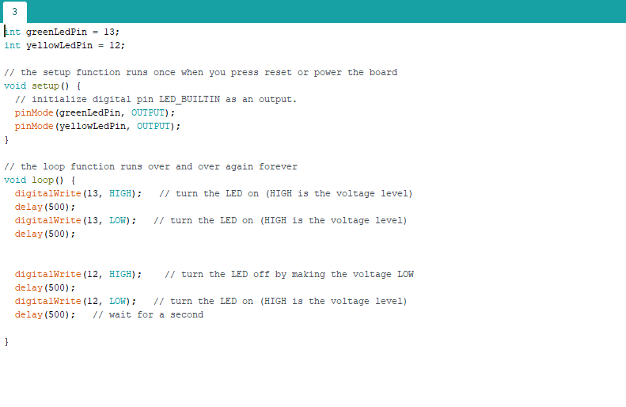

EXERCISE 3B: BLINK MULTIPLE LEDS
In deze opdracht is het de bedoeling dat de groene en gele lampje van elkaar afwisselen met branden.
In deze opdracht is het de bedoeling dat de groene en gele lampje van elkaar afwisselen met branden.
In deze opdracht is de code zodanig aangepast dat een LED in fade, terwijl de andere uit fade.
In deze opdracht is het bijna zelfde principe als in 4C. De ene LED fade in, terwijl de andere LED uit fade. Nu wordt dit echter bestuurd door een potmeter.
In opdracht 7A wordt er gewerkt met een led matrix. Met deze matrix wordt er een smiley weergeven op de display. Om de aantal seconden verandert deze smiley in een frowney face.
In opdracht 8 is er gewerkt met een lichtsensor. Met een lichtsenor is het mogelijk om led lampjes te besturen. Hoe meer licht er op de sensor komt, hoe lichter de led lampjes branden.
In deze opdracht werd er gewerkt met een speaker. Deze speaker kan geluiden afspelen tussen bepaalde frequenties. Voor deze opdracht is het de bedoeling dat er een eigen sirene gemaakt wordt.
In opdracht 11 is er gewerkt met een distance sensor. Met hoge frequentie geluiden en echo’s kan de Ultrasonic Proximity Sensor afstanden aflezen. Met de gegeven arduino code, stuur de arduino een signaal naar de sensor. De sensor stuurt vervolgens een ultrasonic pulse, die de arduino vervolgens omzet in cm. Deze kunnen dan afgelezen worden in de serial monitor in Arduino. De LED lamp die hieraan aangesloten is brandt dan wanneer er een object in een radius van 50cm bevindt.
In deze opdracht wordt er kennisgemaakt met Processing. Arduino en Processing kunnen met elkaar samen werken met behulp van serial ports. Dit zijn de usb-ports waarin randapparatuur aangesloten worden. Met andere woorden, de ports waarin de Arduino is aangesloten. In deze opdracht wordt er met een potmeter de Processing programma bestuurd.
In deze opdracht wordt er gewerkt met buttons. Met de button wordt er een LED lamp bestuurd. Zodra de button wordt ingedrukt, gaat de LED lampje uit.
In opdracht 14 wordt er gewerkt met een servo motor. Het was de bedoeling dat de gegeven code zodanig werd aangepast, dat de servo motor unieke bewegingen maakt.